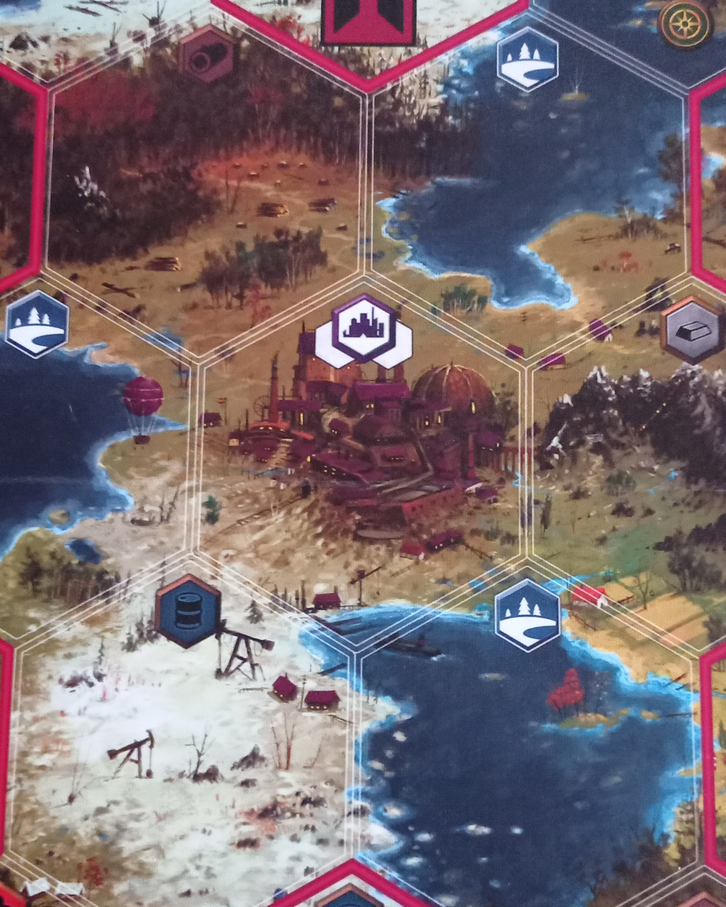
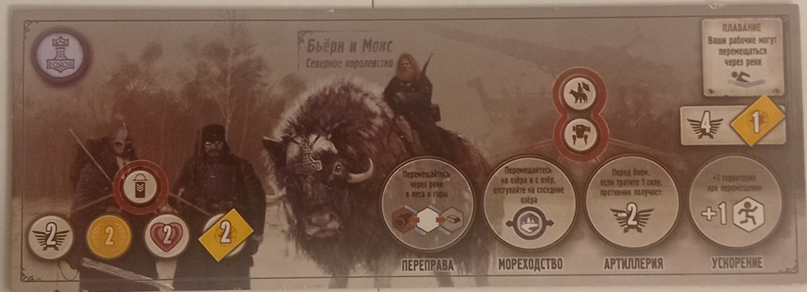
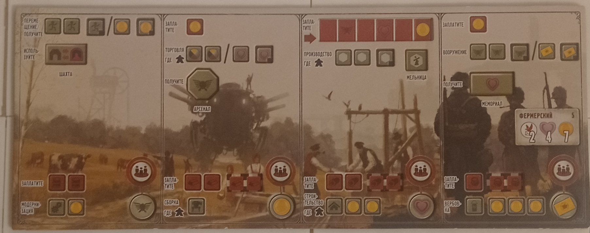
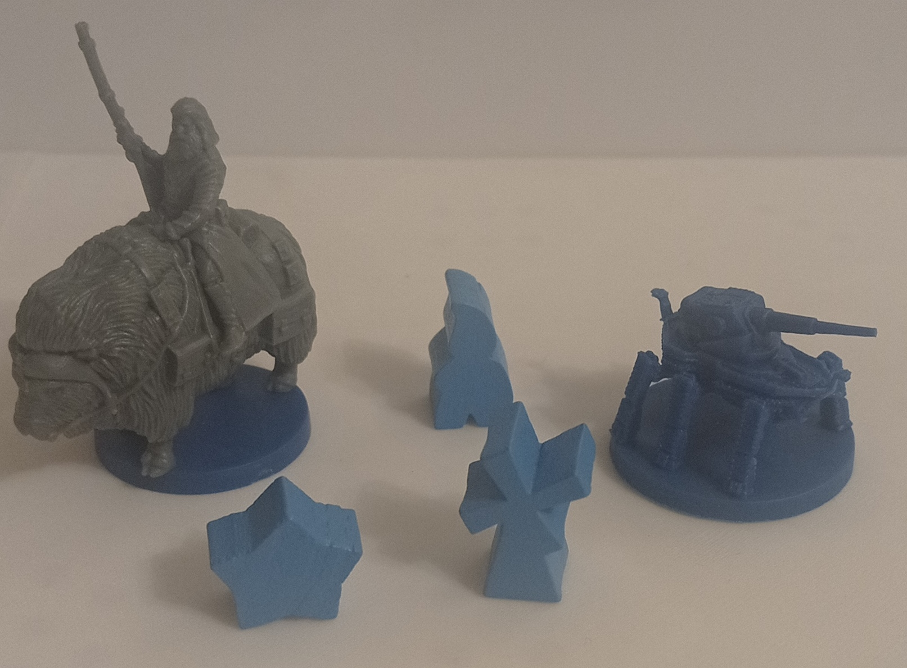
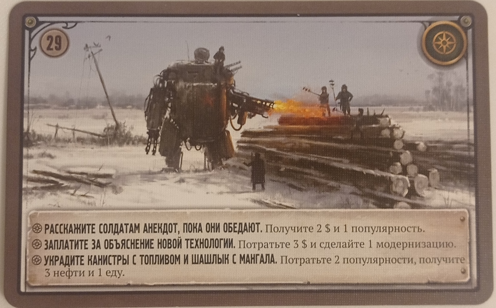
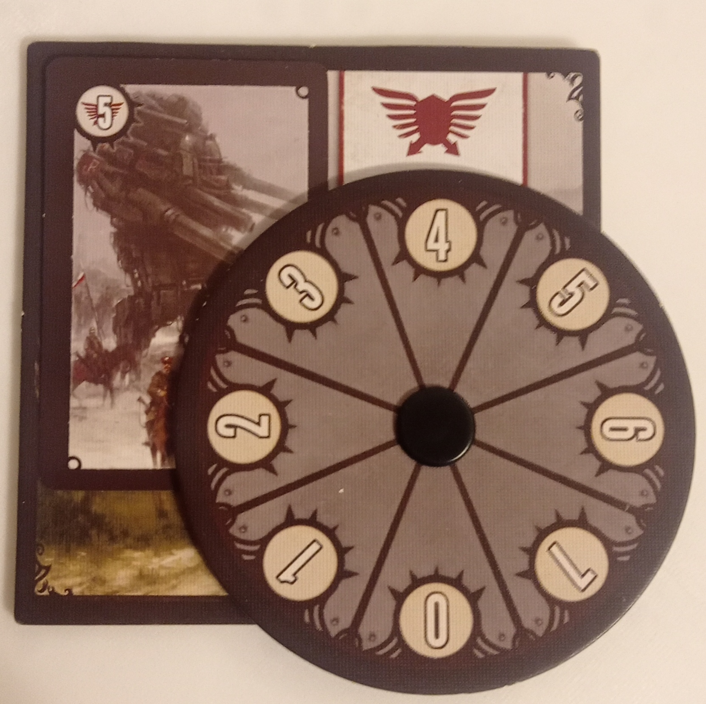
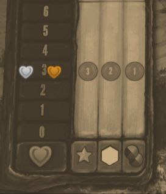

СЕРП
«СЕРП» — экономически-стратегическая соревновательная игра от 1 до 5 играков, в которой вы будете управлять целой нацией в сеттинге Второй мировой войны, где вместо
танков изобрели огромных железных мехов. Задача каждой страны — превзойти конкурентов в экономике. Здесь вместо традиционных победных очков используются деньги.
Цель игроков состоит в заработке денег, которые вы будете получать и тратить во время партии. Может показаться, что «СЕРП» — это про сражения и
разрушения, однако это скорее экономическая стратегия. Да, военные действия возможны, но чаще всего этот аспект используется лишь для устрашения противников.
Проведение боев обходится дорого и не всегда приносит выгоду. Бывает, что за всю партию не происходит ни единого боя. Сразу скажу: игра не для всех.
Многим она покажется чересчур монотонной, особенно при полном составе игроков, особенно в первых партиях. Желательно иметь отдельного человека, который будет
вести подсчеты и контролировать процесс, поскольку отслеживать приходится множество параметров, и новичкам легко упустить важные моменты.
как проходит игра
Игра проходит следующим образом: игроки случайно вытягивают планшеты фракций, за которые они будут играть, а также планшеты "образа игры", с помощью которых они
будут выполнять действия. У каждой фракции есть свой уникальный бонус в виде особой игровой механики, недоступной остальным фракциям. Игроки начинают матч на
своих базах, рядом с которыми на соседних территориях располагаются их рабочие. С помощью этих рабочих игроки будут добывать ресурсы. Ресурсы тратятся на
улучшение планшета "образа игры". Всего существует четыре типа ресурсов: еда, железо, древесина и нефть. Еду вы используете для вербовки рекрутов, которые
предоставляют полезные бонусы. Железо необходимо для создания мехов, нужных для участия в конфликтах, а также для перевозки рабочих и ресурсов. Древесиной
строятся здания, предоставляющие игрокам новые возможности. Нефть требуется для модернизации, улучшая действия игрока и снижая затраты ресурсов на постройку,
сборку, вербовку и модернизацию. Чтобы завершить игру, кому-то из игроков нужно набрать шесть звёзд. Звезды игроки получают за различные достижения, такие как
победа в битве, выполнение задания или создание всех мехов. Самое любопытное, что игрок, собравший шесть звёзд, может и не выиграть. Как я упоминал ранее, главная
цель игры — заработать больше денег. Когда игра заканчивается, начинается подсчёт: каждый игрок получает деньги за звёзды, за захваченные территории и за
оставшиеся ресурсы по специальному курсу, зависящему от отыгрыша игрока и немного от удачи. После этого игроки добавляют эти деньги к своим накоплениям, полученным в
процессе игры, и тот, у кого окажется наибольший капитал, объявляется победителем.
элементы игры и правила
игровое поле

Поле состоит из множества гексагонов разных видов: с озёрами, с лесами, с горами, с деревнями и так далее. На каждом типе гексагона есть свои особенности,
о которых сейчас пойдёт речь.

- Гексагон с ресурсом – на таких гексагонах рабочие могут добывать ресурсы. Один рабочий добывает один ресурс за одно действие производства. Таких
гексагонов четыре вида – под каждый ресурс.
- Гексагон с деревней – на таком гексагоне можно получить дополнительного рабочего. Чтобы это сделать, необходимо, чтобы там находился хотя бы один ваш рабочий.
После действия производства на этом гексагоне появится ещё один работник. Откуда он берётся? Я сам не знаю, наверное, они там экстренно натрахиваются и рожают новых
рабочих.
- Гексагон с шахтой – это обычный гексагон, но с шахтой. Она функционирует как телепорт: можно залезть в одну шахту и выйти через другую при перемещении.
- Гексагон с озером – на таком гексагоне могут находиться лишь мехи с героями, причём только мехи и герои из двух фракций.
- Гексагон с факторией – единственный на карте. Если прийти туда героем, можно получить карту фактории, которая поможет быстрее получить звёзды.
Также фактория засчитывается как за три территории вместо одной.
планшет фракции

На планшете фракции вы найдёте основную информацию о ней, а именно: какой особый бонус она даёт, какие усиления предоставляют мехи и какую начальную боевую мощь она имеет.
планшет "образа игры"

Данный планшет, как и фракционный, выдаётся случайным образом. С ним игроки будут взаимодействовать на протяжении всей игры. Работает следующим образом:
Сверху указаны действия, которые может совершать игрок, а именно:
- Перемещение/Монеты – вы можете переместить два юнита (юниты – это рабочий, мех, герой) либо получить одну монету.
- Торговля – вы можете потратить одну монету, чтобы приобрести два любых ресурса или одну популярность (о ней позже).
- Производство – на двух территориях, где находятся ваши рабочие, вы можете разместить столько ресурсов, сколько рабочих стоит на данном гексагоне.
Ресурсы, которые следует поместить, обозначены на территории.
- Вооружение – вы можете потратить одну монету и получить либо два очка военной мощи, либо одну карту боя.
После выполнения верхнего действия вы можете приступить к нижнему:
- Модернизация – потратьте столько единиц нефти, сколько указано на вашем планшете; если вы это сделали, проведите модернизацию.
- Сборка – потратьте столько единиц железа, сколько указано на вашем планшете; если вы это сделали, соберите меха.
- Стройка – потратьте столько единиц дерева, сколько указано на вашем планшете; если вы это сделали, постройте здание.
- Вербовка – потратьте столько единиц еды, сколько указано на вашем планшете; если вы это сделали, завербуйте рекрута.
фигурки(юниты) играков

всего у играков 3 основных вида юнитов:
- Герой – герой может брать карты встреч, если встанет на соответствующий гексагон с событием. При боевых конфликтах игрок может использовать карту боя за своего
героя. Герой при входе в факторию получает карту фактории. На героя распространяются бонусы от мехов. Герой может перевозить неограниченное количество ресурсов за раз.
- Мех – мех может транспортировать любое количество рабочих и ресурсов за раз. В случае боевых конфликтов игрок может использовать карту боя за своего меха.
Мех дает постоянные бонусы при передвижении и в боях, в зависимости от фракции.
- Рабочие – рабочие необходимы для добычи ресурсов. Также рабочие считаются неприкосновенными: хотя изгнать их с территории возможно, но за это
агрессор потеряет популярность.
встреча

На некоторых гексагонах расположены жетоны событий. Если герой игрока попадет на такой гексагон, ему предстоит вытянуть карту события. На карте события представлены три варианта действий:
- Получить небольшой бонус.
- Потратить деньги и получить значительный бонус.
- Уменьшить свою популярность ради получения «отличного» бонуса
(второй и третий варианты зависят от ситуации и положения игрока, поэтому могут оказаться как
выгодными, так и невыгодными).
Бой
Боевое столкновение происходит тогда, когда на одной территории оказываются боевые единицы двух игроков.

Перед началом боя игрокам предоставляется планшет, где участники конфликта должны указать, сколько единиц военной мощи они готовы потратить на битву
(максимум 7). После этого игроки могут выложить карты боя, не показывая их противнику. Количество карт, которое игрок может разыграть, зависит от числа боевых
единиц на территории конфликта. Например, если на территории сражения находятся ваш герой и мех, вы сможете использовать до двух карт боя. Карты боя добавляют
очки боевой мощи к указанному вами значению на планшете. Побеждает тот, у кого больше очков боевой мощи. В случае ничьей выигрывает нападающий. Проигравший
перемещает все свои фигуры (за исключением зданий) с данной территории на свою базу.
популярность

Популярность – это курс монет. В конце игры игроки по этому курсу получают деньги за свои звезды, захваченные территории и оставшиеся ресурсы. Чем выше
популярность игрока к концу игры, тем выгоднее для него курс обмена.
Остальные, более глубокие механики игры мы уже разберём по ходу геймплея за столом. :3